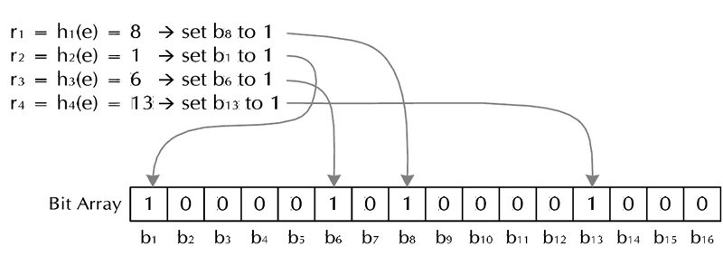

Bloom Filter是由Bloom在1970年提出的一种空间效率很高的数据结构，它利用位数组很简洁地表示一个集合，通过多个hash算法来共同判断某个元素是否在某个集合内。
Bloom Filter插入元素过程的图示： 
它相比hash容器的一个优势就是，不需要存储元素的实际数据到容器中去来一个个的比较是否存在。 只需要对应的位段来标记是否存在就行了，所以想当节省内存，特别适合海量的数据处理。可以用于网络爬虫的url重复过滤、垃圾邮件的过滤等等。并且由于省去了存储元素和比较操作，所以性能也比基于hash容器的高了很多。
尽管Bloom Filter通过多个hash算法来降低hash collision，但仍有可能会不属于这个集合的元素误认为属于这个集合。在容忍低错误率的应用场景中，Bloom Filter通过极少的错误换取了存储空间的极大节省。
相关资料：
- https://en.wikipedia.org/wiki/Bloom_filter
- http://www.cnblogs.com/heaad/archive/2011/01/02/1924195.html
BloomFilter在LevelDB的实现
class BloomFilterPolicy : public FilterPolicy {
private:
size_t bits_per_key_; // 位数组大小m/插入的元素数量n
size_t k_; // 哈希函数的个数
public:
explicit BloomFilterPolicy(int bits_per_key)
: bits_per_key_(bits_per_key) {
// 当k=ln(2)*(m/n)时出错的概率最小
k_ = static_cast<size_t>(bits_per_key * 0.69); // 0.69 =~ ln(2)
// 将哈希函数个数k_控制在1~30之间
if (k_ < 1) k_ = 1;
if (k_ > 30) k_ = 30;
}
// keys: 插入的元素; n: 插入元素的数量; dst: 输出的位数组
virtual void CreateFilter(const Slice* keys, int n, std::string* dst) const {
size_t bits = n * bits_per_key_; // 位数组的大小
if (bits < 64) bits = 64; // 通过限制最小的位数组大小，降低错误率
size_t bytes = (bits + 7) / 8; // 计算需要分配的空间
bits = bytes * 8;
const size_t init_size = dst->size();
dst->resize(init_size + bytes, 0);
dst->push_back(static_cast<char>(k_)); // 将哈希函数个数存放到数组开头
char* array = &(*dst)[init_size];
for (int i = 0; i < n; i++) {
// 使用double-hashing模拟多个哈希函数
// https://en.wikipedia.org/wiki/Double_hashing
// h(i,k) = (h1(k) + i*h2(k)) % T.size
// h1(k) = h, h2(k) = delta, h(i,k) = bitpos
uint32_t h = BloomHash(keys[i]);
const uint32_t delta = (h >> 17) | (h << 15);
for (size_t j = 0; j < k_; j++) {
const uint32_t bitpos = h % bits;
// array数组上的每个char有8个位
// 将array上相应的位设置为1
array[bitpos/8] |= (1 << (bitpos % 8));
h += delta;
}
}
}
virtual bool KeyMayMatch(const Slice& key, const Slice& bloom_filter) const {
const size_t len = bloom_filter.size();
if (len < 2) return false;
const char* array = bloom_filter.data();
const size_t bits = (len - 1) * 8;
const size_t k = array[len-1];
if (k > 30) return true;
uint32_t h = BloomHash(key);
const uint32_t delta = (h >> 17) | (h << 15); // Rotate right 17 bits
for (size_t j = 0; j < k; j++) {
const uint32_t bitpos = h % bits;
if ((array[bitpos/8] & (1 << (bitpos % 8))) == 0) return false;
h += delta;
}
return true;
}
};